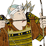

Total War Encyclopaedia
Manual
Units
Buildings
Arts
Clans
Characters
Provinces
Specialities
Tutorials
Campaign Selection
Rise of the Samurai Units
Bow Infantry
Bow Infantry
Bow Attendants
Bow Levy
Bow Levy Garrison
Bow Warrior Monks
Foot Samurai
Foot Samurai Garrison